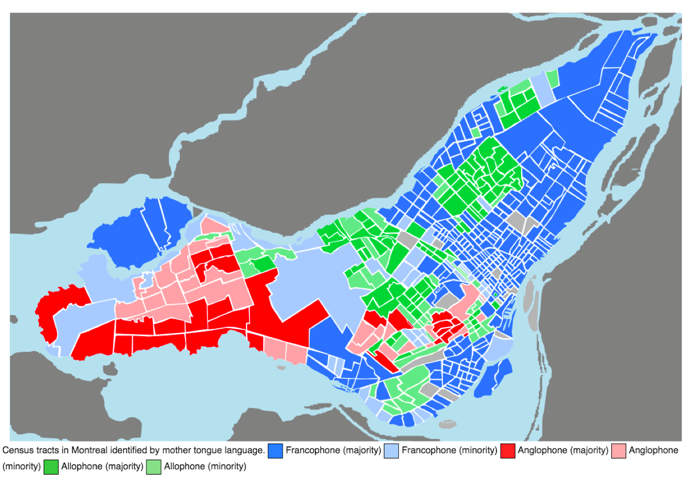
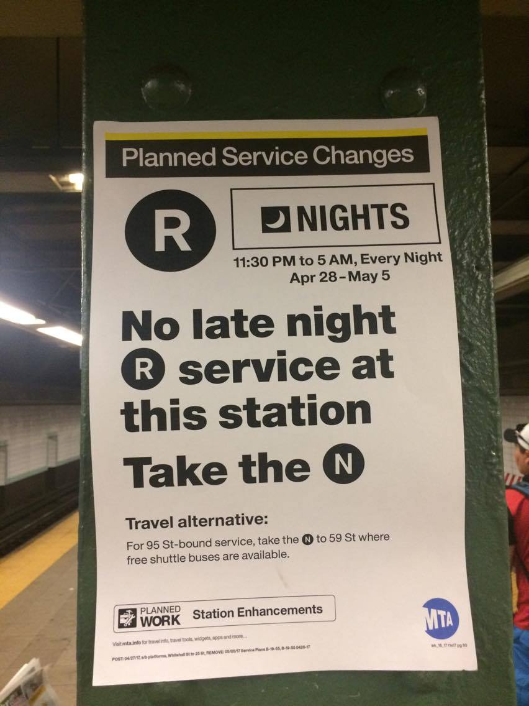
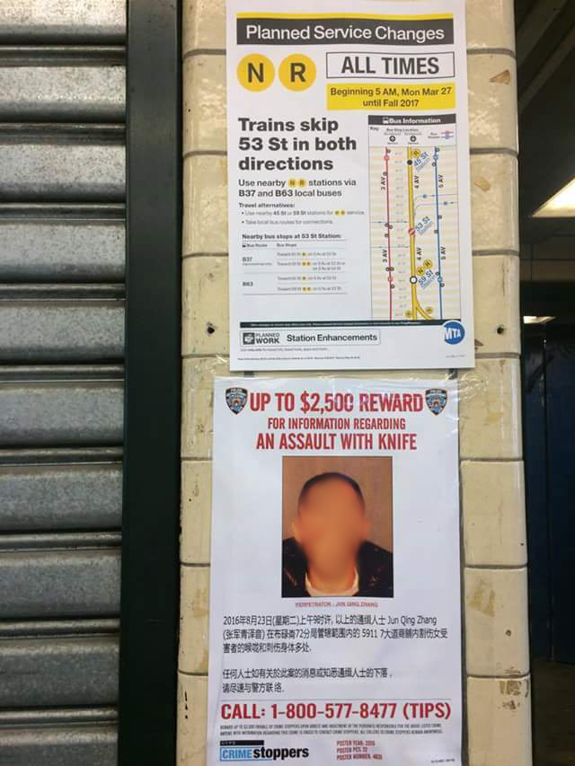
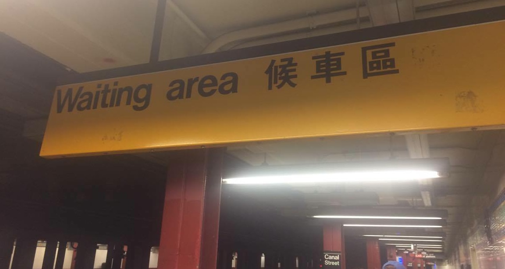

Introduction
IntroductionIntroduction
Public transportation networks ensure efficient mobility in large cities, especially for lower income residents who lack access to private vehicles. Beyond simple mobility, transit access can determine access to job opportunities, healthcare services or education. Navigating urban transpiration networks often involves purchasing tickets, knowledge of routes and sercice changes, or unanticipated interpersonal interactions—all of which necessitate the use of language. Additionally, due to its integral place in daily life, the stations, train cars, or buses of the system themselves become important commercial and social communicative agents through posted advertisements, public service announcements, and event promotions. Not speaking and/or understanding the language(s) used thoughout a transportation system can both directly restrict an individual’s navigation of the system and more broadly hinder his or her interaction with urban society.
The choices about the language(s) officially displayed in transit systems are political. As public spaces, the language(s) used by, and found in the system are a reflection of wider laws and attitudes towards language diversity in a city. How does the transporation system of a global city respond to its liguistically diverse population?
I set out to investigate the responses to this question by investigating the subway systems of New York City and Montreal. Possessing the first and third most ridden rapid transit systems in North America, the inhabitants of both these linguistically diverse cities cruitially rely on these tranportation systems. Additionally, both cities are home to large numbers of new immigrant communities, adding to their language diversity. In a direct comparison of census data, the dominant language in each city- French in Montreal and English in New York City- is the langauge spoken at home by only about 72% of the population. Despite somewhat parallel linguistic demographics, official responses to multilingualism are starkly different. While New York City's Metrotropolitan Transportation Authority (MTA) makes noticeable efforts to reach non-English speakers, Montreal's Societé de Transports de Montreal (STM) opperates nearly wholey in French. What explains their differing responses? Moving beyond this structural comparison, I conduct field observations along the R and N train lines in New York City to evaluate how multilinguialism functions in the MTA.
Language and the Law in Public Space
A subway system is a public space whose officialized "linguistic landscape" offers valuable indications about such things as the "multilingual composition of a community, pubic debates about about language, public policy goals, and power relations between langugages".
Montreal
"French Classes are Free for Immigrants"

Montreal
Entrance to the Metro System
Montreal
Subway Map
Montreal
Metro Sign
The historic struggle between Montreal’s Anglophone and Francophone populations defines and intensifies the language politics of the city, and, as a result, the linguistic landscape of the Montreal Metro system. Since the “Quiet Revolution” of the 1960s and 1970s, a series of more and more restrictive language laws have been implemented making French the official language and going to far as to ban the use of the secondary (and historically prominent) language, English, in public signage. As a result, the highly multi-lingual population of Montreal is forced to use a largely mono-lingual Metro system, as is evidenced by several photos I took last month in the system [see slideshow]. At the most extreme, bus routes that serve solidly Anglophone neighborhoods like Westmount, yet the STM is required to only issue physical pamphlets and signage in French [photographed brochure].

In New York, the de facto language of urban life is predominantly English, both historically and today. However, the MTA, private companies, and city agencies use other languages (most frequently Spanish) in the subway system ads, signs and displays. While I assumed that such multilingulaism of the MTA's linguistic landscape stemmed from local agency efforts at inclusion or outreach to non-English speaking immigrant communities, I learned upon investigation that liguistic diversity is in fact legally mandated at the federal level. Signed by President Bill Clinton in 2000, Executive Order 13166 ("Improving Access to Services for Persons with Limited English profifiency") establishes compliance standards for reciepients of Federal funds to make reasonable efforts at offer government servies in languages other than English, if such a demand exists. Based on the legal principle of non-descrimination on the basis of national origin, as enshrined in the Civil Rights Acts (1965), public agencies such as the MTA are required make Limited English Profiency (LEP) plans to ensure that they meet the needs of their linguistically diverse populations.
Law dictates the official language policies of both transit agencies- in Montreal's case mandating monolingualism, while in New York's case enshrining multilingualism. If language and national/city identity are closely linked, as littearture suggests, this differentiation raises interesting theoretical questions about idenity politics and power in both cities.
MTA Limitted SP English Proficiency Plan
How does MTA institute the federal mandate for outreach to Limited English Proficiency (LEP) communities? According the the MTA website, the agency reviews its LEP plans annually to determine whether they meet the needs of their current LEP populations. With plans "designed to be flexible", the MTA bases their decisions on four criteria in order to meet federal standards for the agency: (1) the number or proportion of LEP persons in the MTA Agencies' service area; (2) the frequency with which LEP individuals come into contact with the MTA Agencies' programs, activities or services; (3) the importance of the programs, activities and services provided by the MTA Agencies; and (4) the resources available to the MTA Agencies and associated costs.
Despite this clear articulation of the existance of an LEP plan, the details on how the plan is excuted and evaluated are more opaque. Introducing their recently publish ethnography of the Number 7 train, Stéphane Tonnelat and William Kornblum write: “the MTA operates in a political fishbowl and tends to avoid collaborating with its patrons. It does not sponsor or support public research in the interest of furthering knowledge about the role of riders. The MTA has a restrictive culture and long-standing policies for dealing with its internal affairs”.
While I refrain from such a broad statement due to the limitted scope of my work, several vain bureaucratic attempts to gather more information about the LEP policies align with their attitude.
 Click MTA Logo to view the MTA's Language Compliance Policy Online
Click MTA Logo to view the MTA's Language Compliance Policy Online
While there is a lack of public data about MTA's policies on multilingualism and LEP compliance, I want to highlight several specific efforts in the photos below that point to a systematic approach to the issue. The most prominent examples of multilingualism to the daily rider are the service change notices that are placed in the stations served by rerouting or construction. While often only in English, it is quite common to see them translated into other languages such as Spanish or Mandarin Chinese. Next, the MetroCard Machines always include several language options. In a rare case of explicit LEP policy description, the MTA website confirms that English and Spanish are availible on all machines, plus two other languages based on census data for the station location: Italian, German, Madarin Chinese, Korean, Russian, Hebrew, or Japanese.
As the next two photos show, the MTA also posts public service announcements and subway service information in a changing selection of languages. One is left to deduce why Italian is used on the South Ferry notice, while it does not feature on the PSA to stand back from the platform edge. Lastly, MTA posts the final two official legal notices somewhere near the entrance of every subway station in the system using six languages: English, Spanish, Mandarin Chinese, Russian, Korean, and Haitian Creole. As this short comparison evidences, the choice of translation is neither consistant nor transparent, and therefore begs further investigation.
Multilingualism along the N + R Trains
Owing to the lack of data and clarity on MTA's language decision, I conducted field observations along the R and N lines. These two sometimes-overlapping lines traverse some of the most linguistically diverse neighborhods in the city. Additionally, extended construction-related service changes offered an opportunity to consider the variance of langauge on both short-term and long-term notices. Armed with an unlimited metrocard, I documented where and how non-English manifested in the "linguistic landscape" of a range of stations along both lines. Photos and short descriptions are geo-tagged by station in the embedded map below. Most depict either service change fliers or which languages are availible in the MetroCard machine of any given station. While my field methodology was not entirely scientiftic, the observations do reveal interesting patterns about how the MTA's LEP policies play out in real life.
Analysis
Pending more systematic data collection, I wish to point to several particularly interesting field observations. While these observations reflect only one two-day period of field work in May 2017, when considered in relation to what we know about multilingualism in the MTA they should contribute to thinking about the larger theoretical topic of multilingualism and public space.
Along the R and N lines in Brooklyn, major service changes required the MTA to post flyer announcements in the stations and on the trains. If you click along the stations in Brooklyn starting at Atlantic Avenue and moving south, reoccuring announcements for the closure of Bay Ridge Av. Station and 53rd Street Station. The photo above, taken at Prospect Avenue Station, demonstrates the multilingual efforts of the MTA to convey these changes to its LEP public. Interestingly, the right-hand flyer (repeated at several other stations) was the only time I saw Arabic in the system. The two left hand flyers advertize a service change on the N and R that will affect the supposedly Arabic speaking community who is affected by the R station closure on the right. Why was this announcement not printed quadrilingually like on the right?

The level of multiligualism seems to be affected by the length of the service change. While the station closures discussed above are long-term changes- and perhaps are then considered to merit translation - the notice of cancelled late-night R train service during the past week spotted above is only found in English.
The length of service changes was not the only factor affecting the languages chosen for display in the subway stops. Other city organizations, like the flier below post by the New York Police Department, will at times post in another language. While the subway flier above the posting features only english, the sign encouraging Chinese speakers to identify a potential suspect was posted in mandarin, suggesting that the NYPD is trying to reach a non-english speaking population that the MTA's multilingualism outreach efforts for some reason did not target.
Furthering my consideration of the "permanence" of multilinguialism in MTA displays, the Canal Street "Wait Here" sign from the 1980s was the only example I observed in which a non-English language was permantly installed into a station's design. Oddly, new digital platform displays in the stations had no non-English options even though I would assume translated software would be quite easy to install.

The Metrocard Machines consistantly gave riders four language options, as stated on the MTA website: always English and Spanish followed by what, in theory, are the most spoken laguages of the surrounding neighborhood according to census data. Further mapping analysis and data collection would confirm the reality of the stated policy. For example, Steinway Street and 46th Street Stations in Queens are just blocks away but the 3nd and 4rd language options are different: French and Italian at Steinway and Chinese and Italian at 46th Street. How small are these determining tracts of census data? Additionally, I checked two different Times Square entrances, yet the offered languages were different.
Conclusion
While both my specific observations and a consideration of the LEP mandate show how the MTA has adjusted the physical dimention of the subway's "linguistic landscape", the larger issue is how in/exclusive multiligualism relates to justice. As I state in the introduction, transportation systems are urban arteries that connect individuals and communities to opportunities. Lacking knowledge about system changes can hinder those of limited-English proficiency from accessing opportunities. More, the subway is a defining public space that can either include or exclude non-majority communities. Seeking language justice in urban transportation systems is therefore both practical and symbolic.
Reconsidering Montreal, where the legislated monolingual approach contrasts with the haphazard attempts at multilingualism in New York, it is possible to see the how past language injustice creates ongoing conflicts over the urban space. Ingrid Piller argues taht linguistic diversity can raise social justice issues specifically because in diversity hierarchies often form.
While in Montreal there is not question over linguistic hierarchy as it relates to Quebecois identity, the dominance of English in such a crutial public space as the subway system must be reconciled with romanticized celebrations of New York's linguistic diversity. Interestingly, while the subway may seem like a perfect public space for furthering justice through multilingualism, other organizations like the NYPD may be more attuned to the issue. As this flyer at heaviliy ethnic Chinese 8th Avenue station demonstrates, multilingualism in public spaces relates in many ways to the law...
Andrew Pasquier
Columbia College, 2017, Political Science and Urban Studies